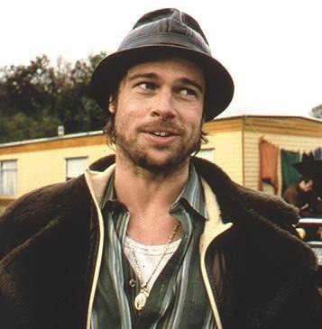

Serhii Lienivenko
Junior Front-End Developer
Hi, my name is Serhii! I'm 36 years old and I'm switcher. I want to become a Front-End Developer with help of RS-School and prove to myself that I can do it. I need it for feeling myself as a demanded specialist, growing professionally and mentally.